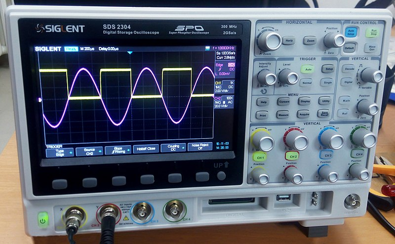

| Item A | Item B | Item C | Item D |
| Link A | Link B | Link C | Link D |
PROPULSION
| Britain 1a | |||
| Cruise Plant | 4 * PR32 Diesel Engines | Shaft x Blade | 2 * 4 (GRR) |
| Boost Plant | 4 DEW Alpha Batteries | Range | N/A |
| Max Speed | 400 | ||
| Reduction Ratio | 19.4:1 | Av TPK | ~14 |
| ERPM | 400-1400 | Max SRPM | 1600 |

 Figure 1:
oscilloscope view Figure 2: other oscilloscope
view Figure 3: extra oscilloscope view
Figure 1:
oscilloscope view Figure 2: other oscilloscope
view Figure 3: extra oscilloscope view
Figure 1:
oscilloscope view Figure 2: other oscilloscope
view Figure 3: extra oscilloscope view
1. Electrical modulation noise is typically a function of generator frequency and load
2. Air filtration noise is typically a function of generator frequency and load
Figure 4: new oscilloscope view
3. Pneumatic modulation noise is typically a function of generator frequency and load
4. Hydraulic modulation noise is typically a function of generator frequency and load
HYDROGEN FUEL CELL TECHNOLOGY
5. Hydrogen noise is typically a function of generator frequency and load
6. Fuel Cell modulation noise is typically a function of generator frequency and load